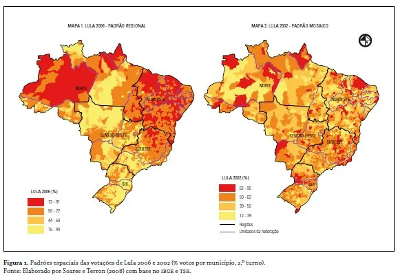

cartografia
A cartografia é a análise e produção de mapas, cartogramas, plantas e demais tipos de representações gráficas do espaço.O primeiro mapa feito pela humanidade possui milhares de anos, sendo aperfeiçoado com o tempo suas técnicas de produção de mapas. Atualmente são usadas imagens de satélites e instrumentos como o GPS que são importantes aliados da cartografia (MUNDO EDUCAÇÃO, 2023).
O que é cartografia?
A cartografia é a ciência que se dedica à representação do espaço geográfico por meio do estudo, análise e confecção de cartas ou mapas. Os seus produtos, entretanto, não se limitam aos mapas: plantas, croquis e o globo terrestre são outros resultados diretos da aplicação dos conhecimentos cartográficos.
O significado da cartografia que temos hoje em dia foi estabelecido pela Associação Cartográfica Internacional (ACI), no ano 1996, que cada vez é mais aceita.
A cartografia se utiliza de variedade de técnicas para que seja possível a representação do espaço, uma delas é a Escala Cartográfica (MUNDO EDUCAÇÃO, 2023).
Figura 1 - Cartografia

Fonte: RESUMO ESCOLAR, 2023
Para que serve a cartografia?
Por meio das técnicas cartográficas, cria-se uma série de produtos que nos auxiliam no estudo e compreensão de várias características do espaço físico, como:
- relevo
- hidrografia
- climas
- distribuição dos tipos de solo
- localização e limites dos biomas etc.
A cartografia permite também a espacialização de informações geográficas úteis para tomadas de decisões na esfera política, gestão e planejamento e para o desenvolvimento de estratégias de caráter político, social ou econômico. Para tal, são utilizados os mapas (MUNDO EDUCAÇÃO, 2023):
voce pode acessar esse site a seguir para compaparar o tamanho dos paises
- políticos
- populacionais
- de redes de transporte
- econômicos
- de uso da terra, e de uma variedade de outros temas
Tipos de cartografia
A cartografia pode ser dividida em duas grandes áreas:
- Cartografia sistemática: ramo da cartografia dedicado à representação das características físicas da superfície terrestre, e por essa razão é também chamada de cartografia topográfica. As informações representadas são de caráter genérico e, por isso, duradouras no tempo, sendo coletadas e replicadas por meio de técnicas específicas.
- Cartografia temática: ramo da cartografia dedicado à produção de mapas com base em informações geográficas diversas, não se restringindo às dimensões físicas de uma área. Seus produtos indicam a ocorrência espacial de fenômenos específicos, como econômicos, sociais, demográficos e mesmo naturais.
Figura 2 - Cartografia sistemática

Fonte: GIOVANINI, 2022
Figura 3 - Cartografia temática
Fonte: GIOVANINI, 2023
Conceitos de cartografia
- Coordenadas geográficas: são valores numéricos que indicam a localização de um objeto ou ponto qualquer na superfície terrestre. São definidas com base nos valores de latitude e longitude, indicadas, respectivamente, pelos paralelos e meridianos (OLIVEIRA, 2019).
- Projeção cartográfica: são representações da Terra em uma superfície plana. Para isso, baseiam-se em uma rede composta por linhas imaginárias horizontais e verticais (paralelos e meridianos) perpendiculares entre si. São classificadas quanto à superfície de projeção (cônica, cilíndrica, plana) e quanto às suas propriedades (conforme, equidistante, equivalente) (OLIVEIRA, 2019).
Figura 4 - Projeções Cartográficas!

Fonte: GIOVANINI, 2021

- Escala cartográfica: é uma relação numérica (proporção) entre as dimensões de uma superfície, conforme são representadas no mapa, e suas dimensões reais, medidas de forma linear. Uma escala de 1:250.000 expressa em centímetros, por exemplo, indica que cada centímetro do mapa corresponde a 250.000 cm ou 2,5 km na superfície do terreno
- Mapas: são representações gráficas, em escala reduzida, da superfície terrestre ou de parte dela sobre um plano. Podem ainda representar Projeção Cilíndrica (OLIVEIRA, 2019).
- Essa projeção é a consequência da projeção dos paralelos e meridianos sobre um cilindro. Esse tipo de projeção tem os paralelos retos e horizontais; e os meridianos retos e verticais, as regiões de latitudes elevadas sofrem com deformações. É a projeção mais usada para representação total da Terra (OLIVEIRA, 2019).

Projeções
Projeção Cônica
- Essa projeção é a consequência da projeção do globo terrestre sobre um cone. Esse tipo de projeção possui paralelos circulares e meridianos radiais, ou seja, retas originadas de um único ponto; normalmente a projeção cônica é usada para a representação de países ou regiões de latitudes intermediárias. (OLIVEIRA,2019)

Projeção Azimutal
- A Projeção Azimutal tem como ponto de referência o Polo Sul ou Norte, normalmente o Norte. (OLIVEIRA,2019)

Projeção Robinson
- Essa é a projeção mais usada na atualidade, ela não causa deformações nas formas, porém não preserva nenhuma propriedade de conformidade. Essa projeção é comum no atlas e mapas escolares espacialmente determinadas informações geográficas, compondo, assim, os mapas temáticos (OLIVEIRA, 2019).